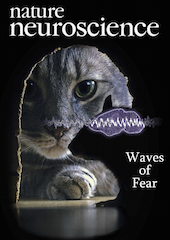

News
- September 2022 Received the Swiss National Foundation Ambizione grant to start my independent research group for the next four years.
- September 2022 Presenting my work at the Ascona Meetings on Neuronal Circuits.
- July 2022 Presented my latest work at the FENS Forum 2022 in Paris.
- Feb 2022 The latest and most significant of my works to date is published. Read more details in the research highglights section.
- June 2021 Starting the Marie Skłodowska-Curie Individual Fellowship to continue my work on the neuromodulation of amygdala circuis at the Friedrich Miescher Institute (FMI) for the next two years.
- June 2021 Succesfully completed the EMBO EMBO Long-Term Fellowship at the FMI
- May 2021 Our latest work identifying the role of the intercalated clusters in fear behavior is published.
- May 2021 Happy to have contributed for the proof-of-concept and evaluation experiments for an important new tool enabling the optogenetic axon inhibition
- Nov 2020 I took the initiative to establish the FMI Young Investigator Seminar Series online. This platform will host young investigators from around the world to virtually visit the FMI and share their research.
- July 2019 The review article based on the brainstorming workshop Exploring New Etiological Paths Towards Neurodegeneration in Mexico City has been published.
- June 2019 Hosting a project and tutoring at the FENS - Cajal advanced training program Biosensors and actuators for cellular and systems neuroscience in Bordeaux
- March 2019 Received travel grant to attend and present at the Computational and Systems Neuroscience (Cosyne) 2019 conference in Lisbon
- February 2019 Received the Marie Skłodowska-Curie Individual Fellowship to support my research for two years.
- Janury 2019 Participating and presenting at the FENS-Hertie Winter School – Neural Control of Instinctive and Innate Behaviour in Obergurgl, Austria
- December 2018 Received the EMBO Long-Term Fellowship to support my research for two years.
- December 2018 Paper published.
- October 2018 Participating in the brainstorming workshop Exploring New Etiological Paths Towards Neurodegeneration in Mexico City
- October 2018 Presenting at the FMI Annual Retrat in Pontresina, Switzerland
- August 2018 The preprint of our latest work characterizing the role of respiration in entraining memory circuits is published online in bioRxiv
- July 2018 Presenting at the FENS Forum 2018 in Berlin
- June 2018 Participating in the 68th Nobel Laureate Meeting in Physiology & Medicine at Lindau
- February 2018 Our latest work identifying the role of a direct projection from the prefrontal cortex to the midbrain for the discrimination of threatening and safe contexts
- January 2018 Joining the group of Andreas Lüthi at the Friedrich Miescher Institute (FMI) in Basel, Switzerland as a research fellow
- November 2017 Presenting at the Society for Neuroscience 2017 meeting in Washington, DC
- “Respiratory entrainment of memory circuits”
- October 2017 Participating in the Junior Scientist Workshop on Neural Circuits and Behavior at Janelia Farm
- September 2017 Talking at the Coupling and Causality in Complex Systems conference in Cologne
- “Neuronal synchrony and oscillatory coupling - Functional role and implementation”
- September 2017 Travel grant to attend the Bernstein Conference in Göttingen
- September 2017 Presenting at the Bernstein Conference in Göttingen
- “Internal clocks for circuit organization”
- July 2017 Talking at the Japan Neuroscience Society meeting in Tokyo
- “Internal clocks for circuit organization”
- May 2017 Presenting at the EMBL Symposium on Neural Circuits in the Past, Present and Future in Heidelberg
- “Respiratory entrainment of prefrontal circuits”
- May 2017 Presenting at the Blankenese Conference on Synaptic Plasticity versus Stability in Hamburg
- “Respiratory entrainment of prefrontal circuits”
- April 2017 Talking at the British Neuroscience Association meeting in Birmingham, UK
- “Prefrontal oscillatory mechanisms of fear behaviour”
- March 2017 Travel grant to attend the EMBL Symposium on Neural Circuits in the Past, Present and Future
- March 2017 Travel grant to attend the Blankenese Conference on Synaptic Plasticity versus Stability
- Feb. 2017 Travel award to attend the Japan Neuroscience Society annual meeting
- October 2016 Presenting at the Bordeaux Neurocampus Conference on Probing neural circuits during behavior
- “Manipulating and interpreting fast oscillatory dynamics using optogenetics”
- July 2016 Our latest work characterizing the role of prefrontal neuronal assemblies in bidirectionally controlling fear behavior is published in Nature
- July 2016 Talking at LMU NeuroLunch series
- “Oscillatory circuit organization during fear behavior”
- June 2016 Presenting at the Bernstein Retreat and workshop
- “Manipulating and interpreting network dynamics using optogenetics”
- June 2016 Talking at the Neurizons meeting
- “Neuronal signatures of fear behavior”
- March 2016 Our latest work identifying a novel brain state associated with fear behavior is published in Nature Neuroscience
- March 2015 Talking at the German Neuroscience Society meeting
- “High-density electrophysiological characterization of the hippocampal and cortical network activity in the awake and sleeping mouse”
- November 2014 Presenting at the Society for Neuroscience (SfN) meeting
- “Synchronized prefrontal-amygdala 4Hz oscillations mediate fear behavior”
- July 2014 Presenting at the FENS meeting
- “Long-range synchronization of prefrontal-amygdala neuronal circuits during fear behavior”
